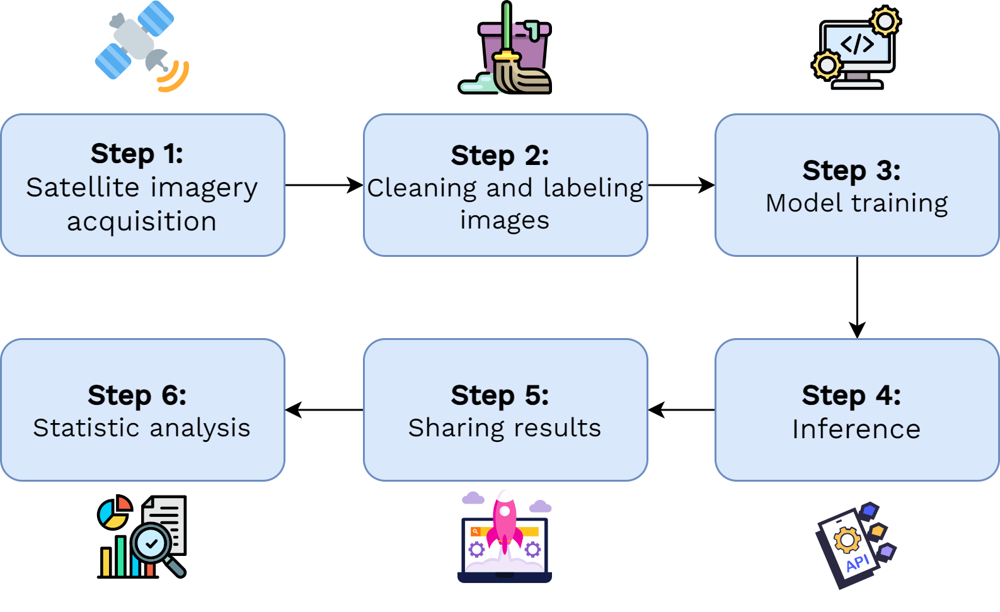

Exploratory Work with Satellite Data: Results Assessment
Raya Berova, Thomas Faria, Clément Guillo
13 November 2024
Outline
1️⃣ Introduction
2️⃣ Methodology
3️⃣ Data
4️⃣ Results
5️⃣ Project Structure
6️⃣ Discussion
1️⃣ Introduction
Project Overview
- Satellite imagery exploration for official statistics, initiated through academic challenge (2022)
- Operational implementation in French overseas territories
- Part of European strategy (Warsaw Memorandum)
Applications in Official Statistics
- Cartographic survey optimization:
- Identification of priority areas for field operations
- Detection of building changes between surveys
- Temporal comparison using historical and recent imagery
- Building stock monitoring:
- Automated change detection
- Land use evolution
- Support for population estimates in overseas territories
Focus on Mayotte and French Guiana
- Critical context:
- Local authorities questioning official statistics
- Rapid urban development
- Challenging field conditions
- Satellite data as supporting evidence:
- Independent source of information
- Continuous territorial monitoring
- Transparent methodology
Presentation Outline
1️⃣ Introduction
2️⃣ Methodology
3️⃣ Data
4️⃣ Results
5️⃣ Project Structure
6️⃣ Discussion
2️⃣ Methodology
Semantic Segmentation

Pleiades © CNES_2022, Distribution AIRBUS DS
Training a Segmentation Model
- Model trained to perform automatic segmentation from annotated examples. Requirements:
- Collection of satellite images
- Production of annotations (building footprints)
- Model learns to reproduce annotations from images, with the goal to generalize to new images
From Segmentation to Change Detection

Methodology Details
- Model architecture:
- SegFormer backbone
- Transformer-based encoder
- Lightweight decoder
Presentation Outline
1️⃣ Introduction
2️⃣ Methodology
3️⃣ Data
4️⃣ Results
5️⃣ Project Structure
6️⃣ Discussion
3️⃣ Data
Satellite Imagery: Key Features
- Multiple spectral bands beyond RGB (e.g., infrared)
- Georeferenced data: each pixel has specific coordinates
- Main characteristics:
- Spatial resolution
- Acquisition frequency
- Spectral resolution
- Geographic coverage
Available Data Sources (PLEIADES)
Pléiades (Very High Resolution)
- 0.5m × 0.5m spatial resolution
- 3 bands (RGB)
- Free archives, on-demand acquisition (6-8 months for a department)
- Image size: 1km² (2000 × 2000 pixels)
Available Data Sources (Sentinel-2)
Sentinel-2 (High Resolution)
- 10m × 10m spatial resolution
- 13 spectral bands
- 5-day revisit time, free access
- Image size: 6.25 km² (250 × 250)
Reference Data (BDTOPO)
- Building footprints as vector polygons
- Based on IGN aerial photography
- Used as training data despite temporal misalignment with Pléiades imagery
Presentation Outline
1️⃣ Introduction
2️⃣ Methodology
3️⃣ Data
4️⃣ Results
5️⃣ Project Structure
6️⃣ Discussion
4️⃣ Results
Interactive Visualization Tool
Access the application: Click here
- Administrative-level monitoring of building changes:
- Selection by administrative units (municipalities, districts)
- Quality control of detected changes
- Key features:
- Side-by-side temporal comparison
- Statistical indicators by area
- Interactive visual validation
Presentation Outline
1️⃣ Introduction
2️⃣ Methodology
3️⃣ Data
4️⃣ Results
5️⃣ Project Structure
6️⃣ Discussion
5️⃣ Project Structure
Technical Environment
- Cloud-native architecture (SSPCloud platform)
- Modern tech stack: Kubernetes, Docker, MLFlow, React
- Automated workflows for reproducibility
- Continuous deployment practices
Processing Pipeline

Application Architecture

Technical Implementation
- Complex technical environment due to:
- Non-traditional data processing
- Large data volumes
- High computational needs
- Reproducibility requirements
Challenges & Perspectives
- High maintenance costs due to technical complexity
- Need for specialized skills
- Promising results for cartographic survey support
- Potential improvements identified for each pipeline stage